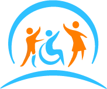

Gabriel Mella E. · Director de Operaciones y Desarrollo Comercial · GME Comercializadora y Logística Spa
OpenCluster Tech · Construyendo Inclusión
Estimado Gabriel: aquí tienes nuestros productos con su foto, su ficha y tres precios, todos con IVA incluido. Marca los que te interesen con «¡Lo quiero!» y elige la cantidad. Al final de la página verás tu listado; ahí puedes dejarme un comentario y enviármelo con «Enviar a Rayen».